现在我们来考虑电容器充电时所需的能量。如果电荷Q已从电容器的一个导体移至另一导体，则它们之间的势差为：
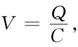 （8.8）
式中C为该电容器的电容。电容器充电时需做多少功呢？按照上面对球体的做法，我们设想电容器是逐步把小的电荷增量dQ从它的一板移至另一板而进行充电的。转移电荷dQ所需的功为：
dU=VdQ.
将式（8.8）中的V代入，则可以写成：
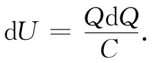
或者，从零电荷到最后电荷量Q进行积分，则有：
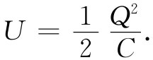 （8.9）
这个能量也可写成：
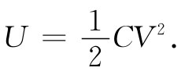 （8.10）
若回忆起一个导电球体（相对于无限远处）的电容为
C球体 =4π∈0 a，
则可立即由式（8.9）得到一个带电球的能量：
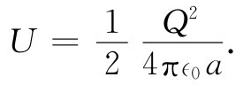 （8.11）
当然这也是一个带有总电荷Q的薄球壳 的能量，而且恰好就是式（8.7）所给出的一个均匀带电 球体能量的5/6。
现在，我们讨论静电能概念的应用。试考虑下述问题：施于电容器两板间的力多大？或者，当存在另一异号电荷的导体时，绕带电导体某个轴的力矩是多少？这些问题，应用上述电容器的静电能式（8.9），再加上虚功原理（第1卷第4、13和14章），就不难回答。
让我们运用这一方法来求平行板电容器两板间的作用力。若我们设想两板的间距增加一小量Δz，那么外界对于移动这两板所做的机械功应为
ΔW=FΔz， （8.12）
式中F为两板间的力。这功必定等于电容器的静电能的变化。
根据式（8.9），电容器原来的能量为：
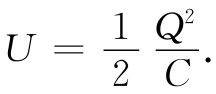
这能量的变化（如果不让电量变化的话）为：
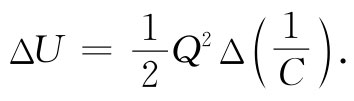 （8.13）
使式（8.12）和（8.13）两者相等，则有
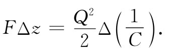 （8.14）
这也可以写成：
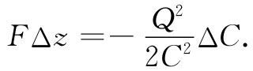 （8.15）
当然，该力是由两极板上电荷的吸引造成的。但我们不必为电荷如何分布的具体细节而操心，我们所需要的一切都由电容C来对付。
不难看到，如何将这个概念推广到任意形状的导体以及关于力的其他分量上去。在式（8.14）中，我们可用所要寻求的力的分量代替F，并用在相应方向上的小位移来代替Δz。或者，若有一个带轴的电极，而希望知道该力矩τ，则可将虚功写成：
ΔW=τΔθ，
式中Δθ是小角位移。当然，Δ（1/C）必须是与Δθ相对应的1/C的变化。按照这一办法，我们能够求得如图8-3所示的那种可变电容器中作用于可动片上的力矩。
图8-3 作用于一可变电容器上的力矩有多大
再回到平行板电容器的特殊情况，我们可应用第6章中已导出的关于电容的公式：
式中A是每块板的面积。如果两板间距增大Δz，则
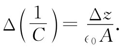
由式（8.14）可以得到作用于两板间的力为：
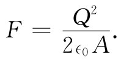 （8.17）
让我们对式（8.17）更仔细地考察一下，并看看能否说出力是怎样来的。若把其中一板上的电荷写成
Q=σΑ，
式（8.17）则可以重新写成
人们会立即猜想到，作用于板上的力，应等于板上的电荷Q乘以作用于该电荷的场。但我们却有一个令人惊奇的因子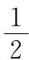 。原因是，E0 并非作用于 电荷的场。如果设想在板表面上的电荷占据一薄层，如图8-4所示，则场将从这一层的内边界上的零变化至在板外空间里的E0 。作用于面电荷上的平均场乃是E0 /2。这就是式（8.18）中为什么出现因子 的原因。
图8-4 导体表面上的电场，当穿过该表面的电荷层时，由零变至E0 =σ/∈0
你应注意，在计算虚功时，我们曾假定在电容器上的电荷保持不变——即在电的方面电容器不与其他东西连接，从而总电荷不能改变。
要是设想当电容器做虚位移时，其电势差保持不变。那么就应当取
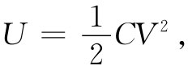
而且代替式（8.15），我们现在应有
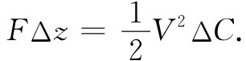
它给出一个大小等于式（8.15）的力（因为V=Q/C），但却带有相反的符号！很遗憾，当我们把电容器和它的充电源断开时，电容器两板间的作用力肯定不会改变符号。并且，我们还知道，带有异号电荷的两板一定互相吸引。在这第二种情况下，虚功原理已被误用——我们未把充电时对电源所做的虚功计算在内。这就是说，当电容变化时，要保持电势V为常数，电荷VΔC就必然要由电荷源来提供。但这一电荷是在势为V时提供的，因而保持电势不变的那个电力系统所做的功就是V2 ΔC。机械功FΔz加上 这个电功V2 ΔC共同构成电容器总能量的变化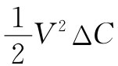 。因此，如同上面一样，FΔz仍然是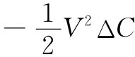 。